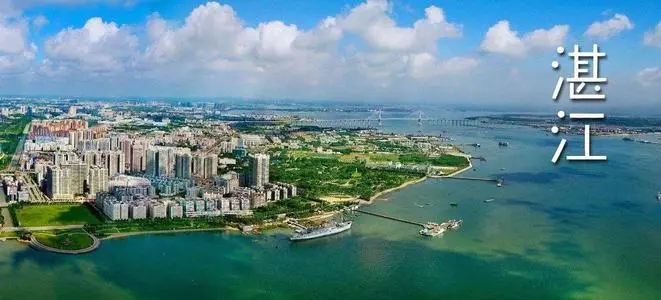
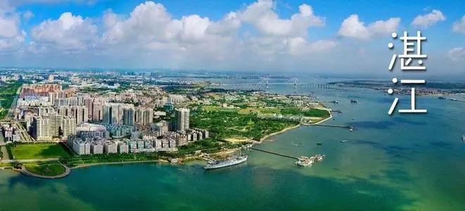
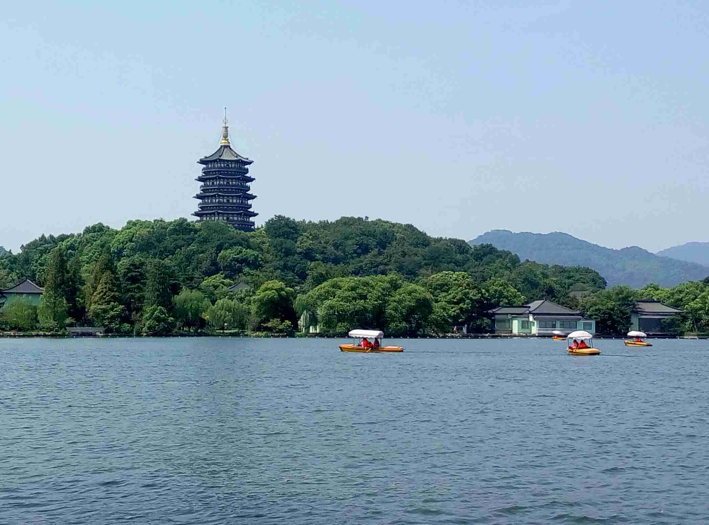
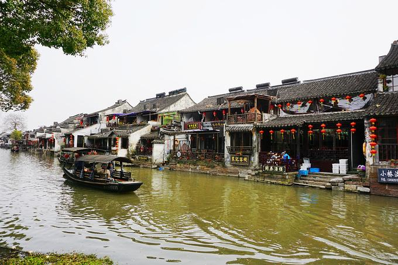
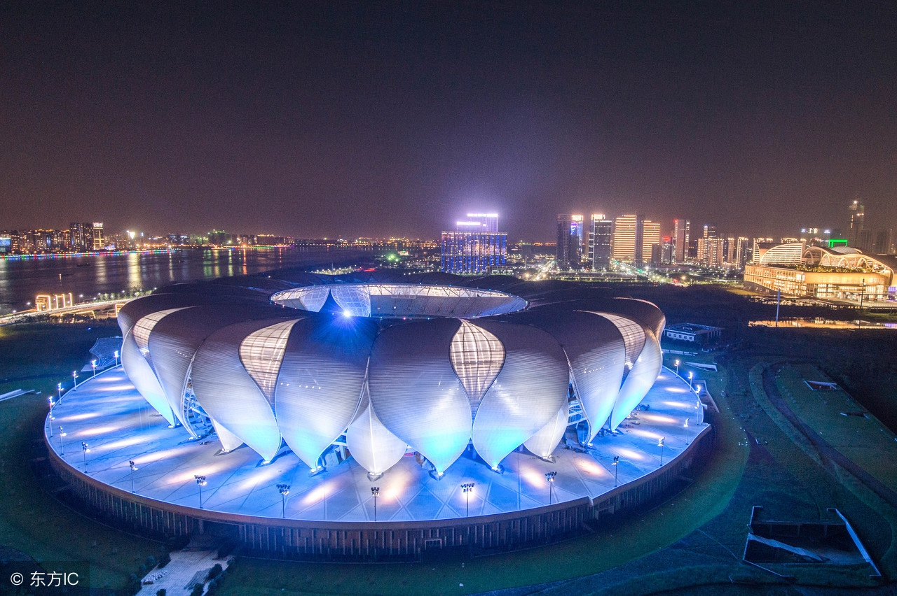
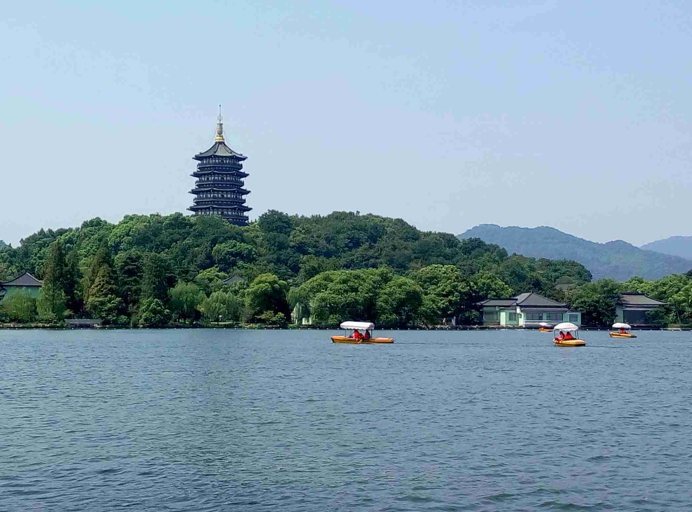
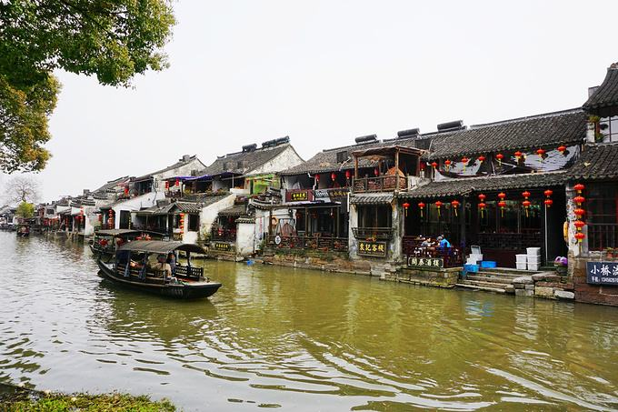
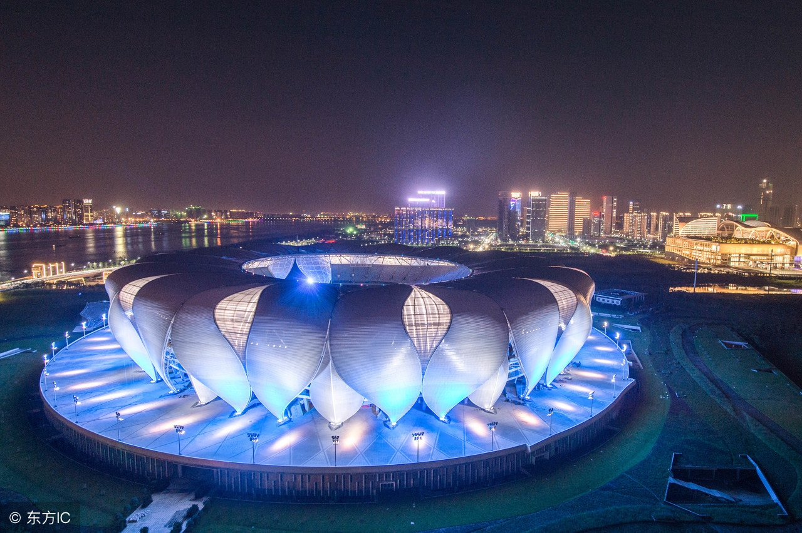
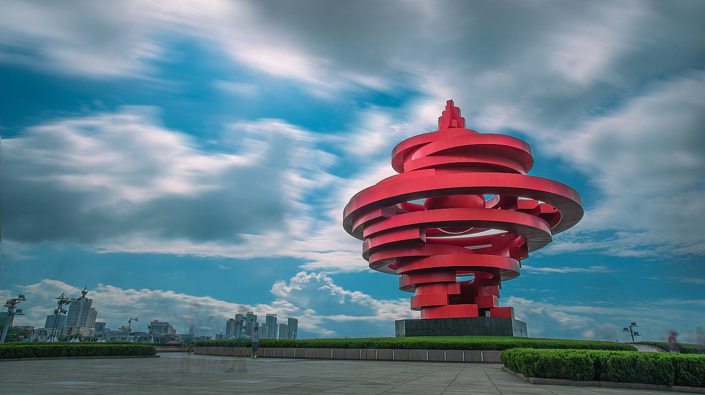
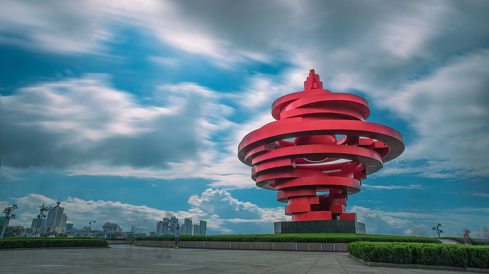

杭州
杭州好玩的地方有哪些？


 



 





 



About
杭州必打卡项目——西湖
西湖南、西、北三面环山，湖中白堤、苏堤、杨公堤、赵公堤将湖面分割成若干水面。西湖的湖体轮廓呈近椭圆形，湖底部较为平坦。湖泊天然地表水源是金沙涧、龙泓涧、赤山涧（慧因涧）、长桥溪四条溪流。
西湖有100多处公园景点，有“西湖十景”、“新西湖十景”、“三评西湖十景”之说，有60多处国家、省、市级重点文物保护单位和20多座博物馆，有断桥、雷峰塔、钱王祠、净慈寺、苏小小墓等景点。
2007年，杭州市西湖风景名胜区被评为“国家AAAAA级旅游景区”。

About
杭州必打卡项目—— 岛湖风景区
杭州千岛湖风景区坐落在浙江省杭州市淳安县境内，面积982平方公里，国家AAAAA级旅游景区。
杭州千岛湖风景区地处长江三角洲的腹地。湖形呈树枝型，湖中大小岛屿1078个，千岛湖中大小岛屿形态各异，群岛分布有疏有密、罗列有致。
杭州千岛湖风景区其主要景点有梅峰岛、锁岛、猴岛、龙山岛、三潭岛等。
About
杭州必打卡项目——雷峰塔
杭州雷峰塔又名皇妃塔、西关砖塔，坐落在浙江省杭州市西湖风景区南岸夕照山的雷峰上。塔高71.679米，占地面积0.08平方公里，国家AAAA级旅游景区。
雷峰塔初建于公元977年，是吴越忠懿王钱俶为供奉佛螺髻发舍利而建。后来，因其所在的山峰叫“雷峰”，而逐渐被人们称为“雷峰塔”。中国民间故事《白蛇传》中，法海和尚骗许仙至金山，白娘子水漫金山救许仙，被法海镇在雷峰塔下。
杭州雷峰塔是西湖的标志性景观，“雷峰夕照”自古被封为西湖十景之一。游人登上雷峰新塔，站在五层的外观平座上，西湖山水美景和杭州城市繁华尽在游人的远望近看之中。极目四眺，碧波荡漾的西湖、秀美端庄的汪庄、初见轮廓的南线新景点、绿意葱笼的湖心三岛一览无余。
杭州习俗
青岛是一个现代化的城市，但也在向世界展示着地方民俗特色文化。


杭州人腊八日烧八寺香的习俗。过年时节杭州香火旺，除了宗教因素以外，还有一个鲜为人知的避难功能。早先杭州有句揶揄躲债人的老话，叫做“年廿七，勿着急；年廿八，想办法；年廿九，有有有；三十一日不见面，初一见面拱拱手。